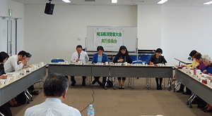

第52回埼玉県消費者大会実行委員会
 4月15日(金)13時30分より、浦和コミュニティセンター第15集会室にて第52回埼玉県消費者大会第1回実行委員会が開催され、22人(13団体)事務局2人が出席しました。
【議題】
1．岩岡事務局長挨拶
2．第52回消費者大会の運営体制と日程
以下のように確認しました。
（1）運営体制
実行委員長 川上 豊子さん(埼玉母親大会連絡会)
副実行委員長 滝澤 玲子さん(埼玉県生活協同組合連合会)
事務局長 岩岡 宏保さん(埼玉県消費者団体連絡会代表幹事)
事務局 加藤 一彦(埼玉県消費者団体連絡会事務局)
（2）第52回埼玉県消費者大会日程と会場
・10月12日(水)さいたま市文化センター
3．各団体参加者の自己紹介
4．第51回消費者大会決算報告・第52回消費者大会分担金・予算
上記について説明し、確認しました。なお、分担金案・予算案については、意見交換の上、一部を修正して確認しました。
5．消費者をとりまく社会状況と大会内容
事務局長より、私たち消費者をとりまく社会状況・埼玉県の状況について報告し、大会の柱となるテーマ・スローガンや、全体会記念講演・分科会・プレ学習会で学ぶべきこと等を意見交換し、以下、確認しました。
- 全体会記念講演講師は出された意見を受けて、対象者を絞り込み具体的調整をすすめます。
- プレ学習会では、第1回のテーマを｢電力小売自由化｣とすること、第2回テーマについては、各団体からの意見を集約し、次回実行委員会で提案します。
- テーマ・スローガンは本日の意見交換を受けて、各団体で話し合い意見集約します。集約内容を受けて、次回実行委員会で確認します。
- 分科会は例年にとらわれず、今大会で実施すべき内容(分科会の持ち方含め)を次回実行委員会で話し合います。
6．消費者大会に向けた検討スケジュール
消費者大会に向けた実行委員会開催のスケジュール、各回実行委員会で話し合う内容について確認しました。
7．市町村消費者行政調査を実施について
事務局より、今年度も市町村消費者行政調査を実行委員会として行うことを提案し、確認しました。次回実行委員会に具体的な資料を提出することになりました。
8．埼玉県消費者被害防止サポーター養成講座の各団体での開催について
事務局より、同制度が変わり各団体での実施が可能になったことを報告し、実施を呼びかけました。次回実行委員会に具体的な資料を提出することになりました。
9．お知らせ
 第1回県内消費者団体交流会
第1回県内消費者団体交流会
日時：6月27日(月)10：30～15：30 埼玉県県民健康センター
 各団体の取り組みのお知らせ
各団体の取り組みのお知らせ
10．次回までのお願い
次回の実行委員会への出欠連絡、プレ学習会参加集約(お弁当含む)、 第52回大会の全体テーマ・スローガン・プレ学習会・分科会への意見をFAX・メールで連絡を頂くことを確認しました。
第52回大会の全体テーマ・スローガン・プレ学習会・分科会への意見をFAX・メールで連絡を頂くことを確認しました。